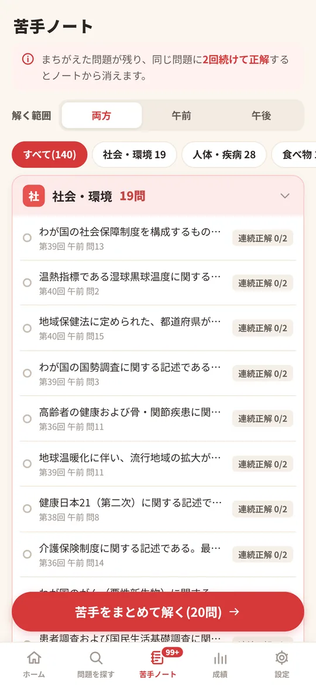
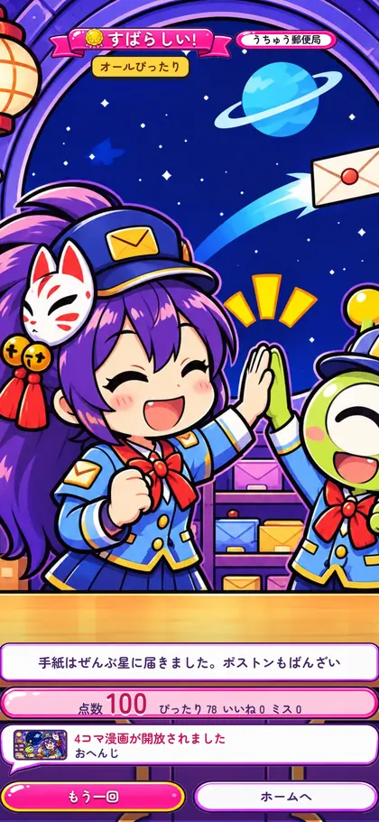
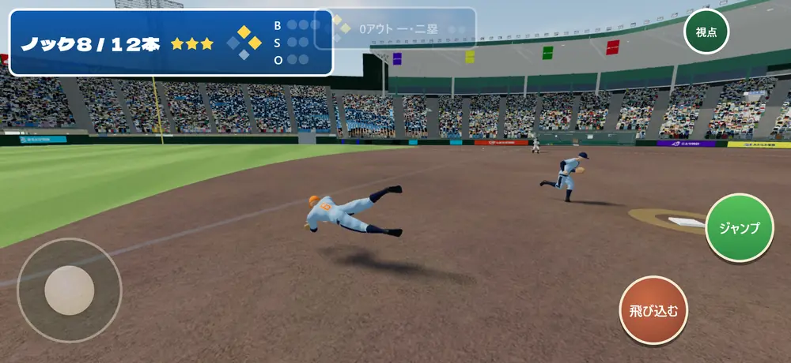
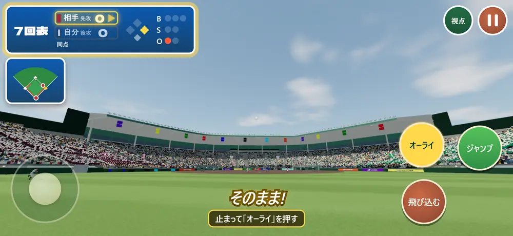
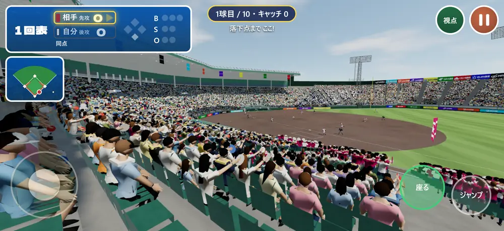
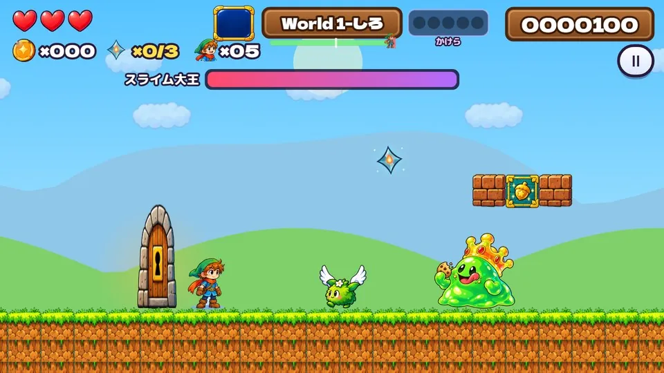
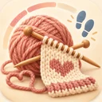
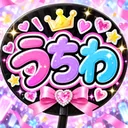

ニガテ帳
介護福祉士・社会福祉士・看護師の過去問。まちがえた問題は苦手ノートに残って、2回続けて正解すると消えます。
テスターの声「正誤が見やすくて解説付きで分かりやすい。苦手が残るので勉強に良い」
音ゲー ・ iPhone とブラウザ
画面を見て、その拍でたたくだけ。おにぎり工場、お祭りの太鼓、朝の電車。曲ごとに場面がまるごと変わるリズムのミニゲーム集です。


入れずにそのまま始まります(3曲)。アプリ版は全12曲、クリアで4コマ漫画。
テスト版を遊んだ人の声(Discord より)
3D 野球 ・ 守備が主役
打球を追って、捕って、投げる。野手の目で守る野球ゲームです。試合を観ながら、球場の中を歩いて回ることもできます。
ブラウザで遊べるのは浜風の球場です。iPhone 版も配信中、Android は近日公開。
テスト版を遊んだ人の声(Discord より)






介護福祉士・社会福祉士・看護師の過去問。まちがえた問題は苦手ノートに残って、2回続けて正解すると消えます。
テスターの声「正誤が見やすくて解説付きで分かりやすい。苦手が残るので勉強に良い」




本業は社内SEです。1人でスマホアプリとゲームを作っています。
アプリ作りにハマって、たくさん作ってます。野球好きなので、野球ゲームが多めです。
Android の相互テスト歓迎です。テスター用のグループ